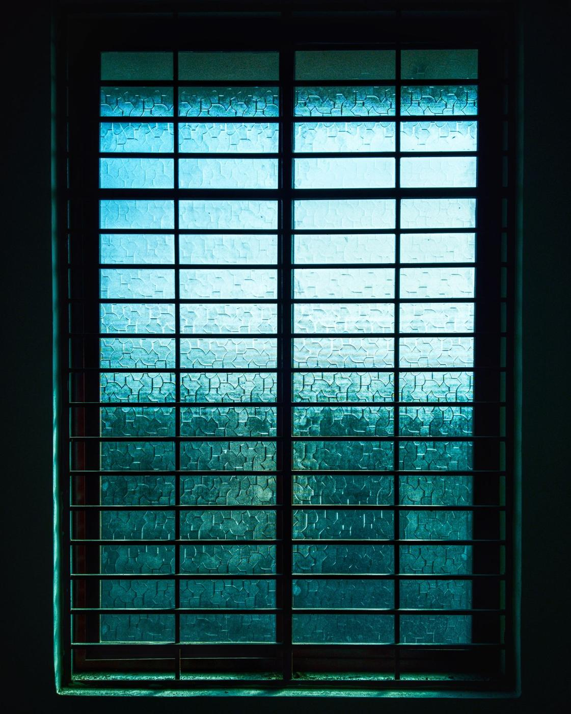

Stalen deuren op maat
Kies het type, geef uw maten in en zie uw deur in 3D. De prijs met levering staat er meteen bij.
Welke deur past bij u?
Drie soorten deuren
01
Draaideur
De gewone deur op scharnieren, met een stalen kader dat in de opening komt. Enkel of dubbel, met een loopdeur links of rechts.
02
Schuifdeur
Hangt aan een rail boven de opening en schuift voor de muur open. Neemt geen plaats in de kamer in.
03
Taatsdeur
Draait rond een as in vloer en plafond, iets uit het midden. Een zware deur die toch licht opengaat.
Maten en grenzen
Wat de webshop maakt
U geeft de maat van de opening in, gemeten zoals in de meetgids. Valt uw maat buiten deze grenzen, dan vraagt u met dezelfde configurator een offerte aan.
In het pakket
- De deur met kader of rail, gelast en gelakt in uw kleur
- Het glas, al geplaatst en afgekit
- Scharnieren, as of rolwagens, en de greep die u koos
- Een montagehandleiding met de nodige maten

VoorbeeldfotoPast uw maat niet in de configurator?
Olivier maakt ook deuren en leuningen buiten de standaardgrenzen. Vraag een offerte op maat.